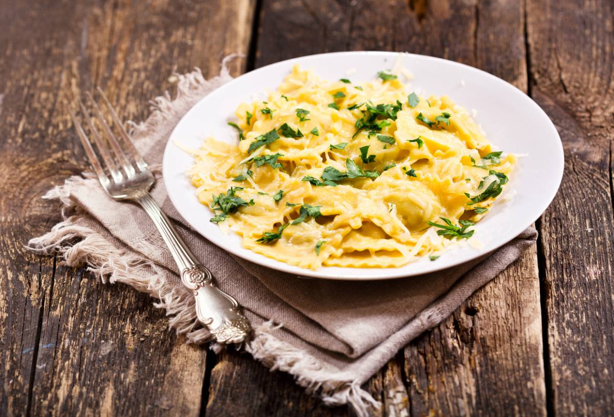

Raviolis con salsa de Queso
Volver a recetas
Ingredientes
- 400 g de pasta fresca raviolis rellenos de queso
- 1 cebolla
- 2 dientes de ajo
- ½ cucharadita de albahaca seca
- 3 quesitos en porciones ligeros
- 200 ml de leche evaporada o nata ligera
- Una pizca de nuez moscada
- Pimienta
- 25 g de queso parmesano
- Una hojitas de albahaca fresca
Preparación
- Preparar una olla con abundante agua (los italianos aconsejan 1 litro por cada 100 gramos de pasta), sobre los 4 litros y una cucharadita de sal. Cuando el agua hierva añade la sal y la pasta, cocer la pasta fresca el tiempo recomendado en el paquete, sobre los 4 minutos. Escurrir y reservar.
- Corta la cebolla en juliana y los ajos en varios trozos. Añade aceite de oliva a una sartén y sofríe unos minutos.
- Trocear los quesitos en porciones en trocitos y agrega a la sartén. Deja que se fundan a fuego lento.
- Incorpora la leche evaporada o nata ligera, la pizca de nuez moscada y la pimienta. Deja cocer a fuego lento cinco minutos.
- Traslada esta salsa a un recipiente y pásalo por la batidora hasta lograr una textura cremosa.
- Combina los raviolis de queso con esta salsa y espolvorea un poco de queso rallado y perejil picado.
Tu resultado final se verá así
